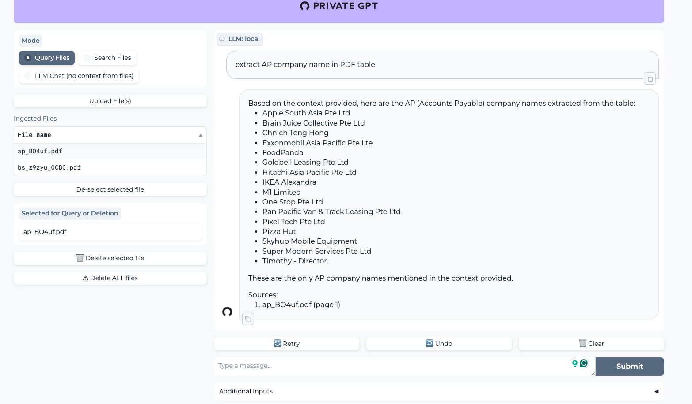
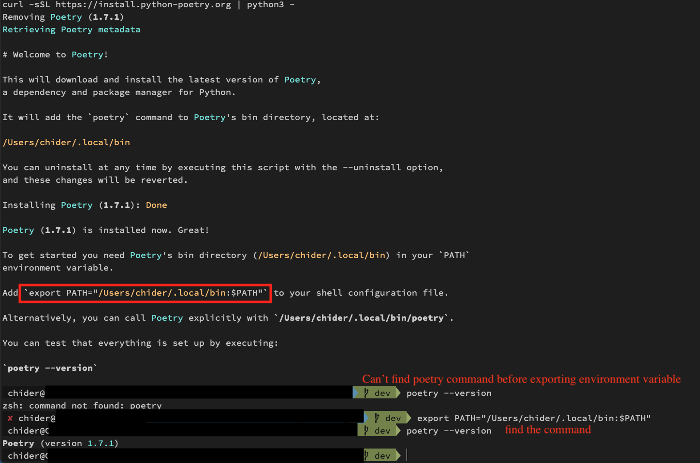

用 macOS 在本機跑 PrivateGPT 紀錄。
可以上傳 PDF file, 讓機器人進行解析。

正文
1 | git clone https://github.com/imartinez/privateGPT |
下載 make
1
brew install cmake
下載 pyenv 3.11 (Poetry 需要 3.11)
1
2pyenv install 3.11
pyenv local 3.11Install Poetry ＋ debug
1
curl -sSL https://install.python-poetry.org | python3 -
這邊起初在安裝的時候遇到問題
- 1.我的 python 沒有 3.11
- 2.找不到 Poetry
解決：
- 移除原本 homebrew 下載的 python 並重新下載
- homebrew 下載
pyenv - 設定環境變數
- 透過
pyenv下載 python 3.11.4 版本 - 重新下載 Poetry (先 uninstall 再 install)
1
2
3
4
5
6
7
8
9
10
11brew remove python
brew install pyenv
echo 'export PATH="$HOME/.pyenv/shims:$PATH"' >> ~/.profile
source ~/.profile
pyenv install 3.11.4
pyenv global 3.11.4
curl -sSL https://install.python-poetry.org | python3 - --uninstall
curl -sSL https://install.python-poetry.org | python3 -下載 Poetry 後，設定 Poetry 環境變數
這部分在下載 Poetry 時，它有給予指示。
這時的
which python
->/Users/chider/.pyenv/shims/python進到專案裡，下載 privateGPT 相關啟動套件
install
1
2
3poetry install --with ui
poetry install --with local
poetry run python scripts/setupOSX GPU support
1
CMAKE_ARGS="-DLLAMA_METAL=on" pip install --force-reinstall --no-cache-dir llama-cpp-python
Run 起來～
poetry run python -m private_gpt(or make run)
補充：
把 local Sqllite 換成 local docker 跑 qdrant
調整專案裡的 setting.yml
1
2
3qdrant:
url: http://localhost:6333
#path: local_data/private_gpt/qdrant下載 qdrant docker
1
2
3
4
5
6
7sudo apt install docker.io
sudo docker pull qdrant/qdrant
sudo docker run -p 6333:6333
-v <path-to-project>/latticefi-private-gpt/local_data/storage:qdrant/storage
-v <path-to-project>/latticefi-private-gpt/local_data/config:qdrant/config
qdrant/qdrant
建立一個 python 虛擬環境
更方便日後切換環境開發。
- 建立虛擬環境 ->
virtualenv -p python3.11 <環境名稱> - 進入虛擬環境 ->
source .venv/bin/activate - 在虛擬環境安裝相關套件
pip install --upgrade pip poetrypoetry install --with localpoetry run python scripts/setup
1 | virtualenv -p python3.11 .venv |
總結
之後要啟動專案，步驟：
- 啟動 qdrant container
- 進入專案
- 進入虛擬環境
- 啟動程式 make run
OK!